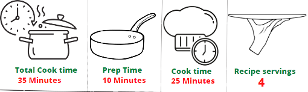
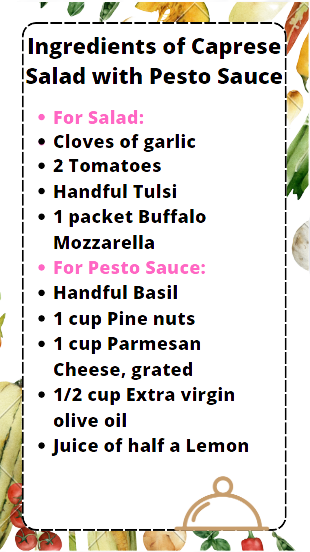

-
How to Make Caprese Salad with Pesto Sauce
Salad Recipe:
1.Cut 2 juicy tomatoes in thick rounds and dress them with a little bit of extra virgin olive oil, some salt and pepper.
2.Break Mozzarella into chunks.
3.On a serving platter, arrange the tomato slices along with the mozzarella chunks.
4.Garnish with tulsi and pesto sauce.
Pesto Sauce:
1.Blend the basil with pine nuts, Parmesan cheese with extra virgin olive oil, until it forms a paste.
2.Squeeze in the lemon juice.
3.If the paste is too thick, add in more extra virgin olive oil to reach the desired consistency.